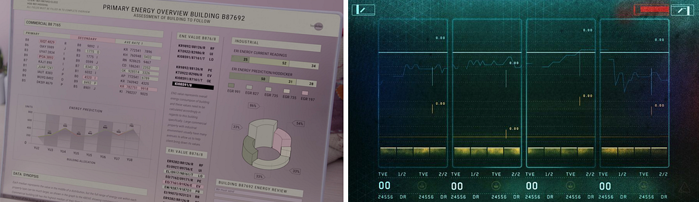
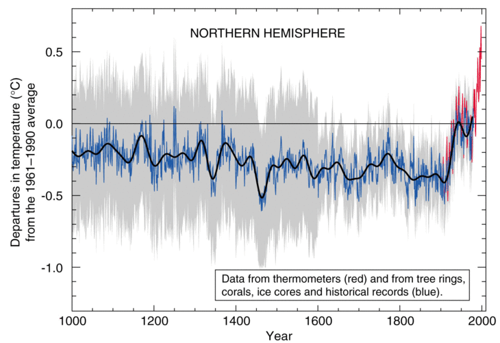
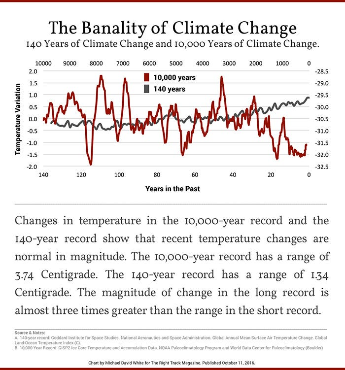
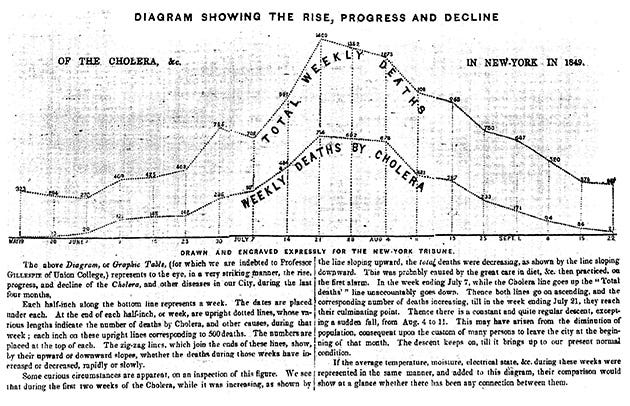
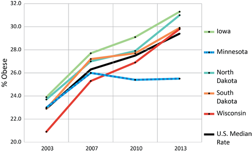
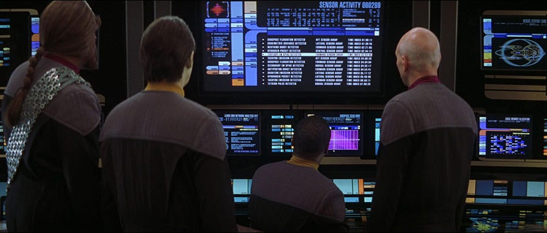
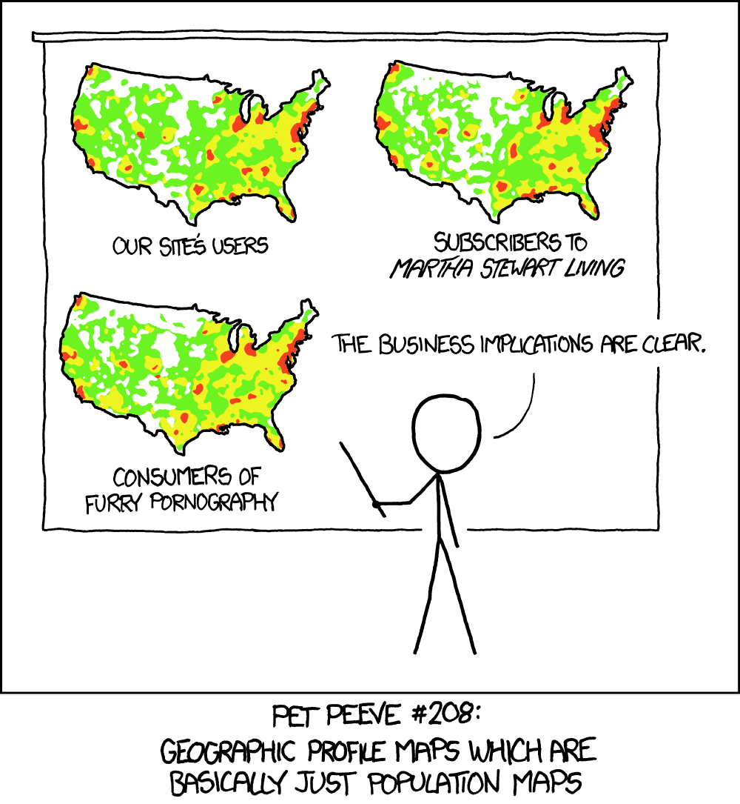
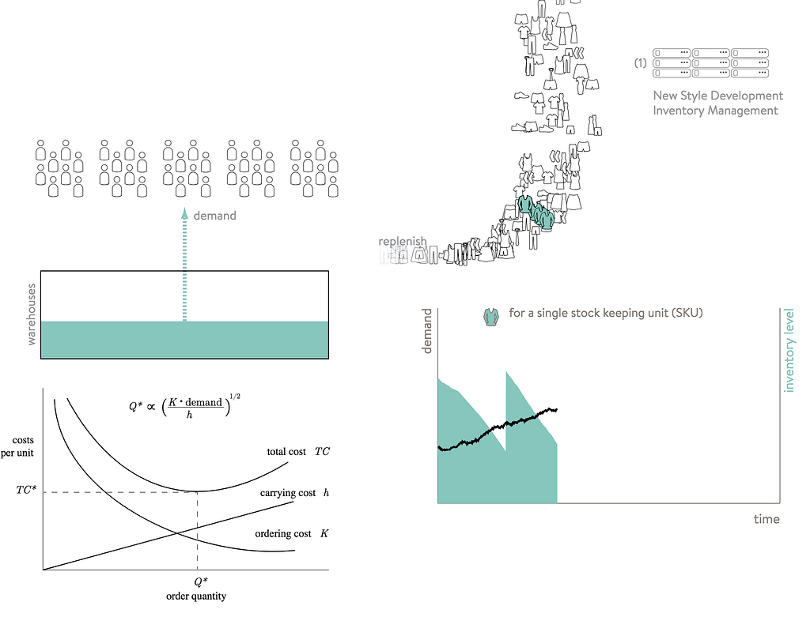

You probably don’t notice data visualization in media like I do. Whether it’s a terrible 3D donut chart or the beautiful but impenetrable displays made by Territory Studios, shows and movies are filled with charts.

In one case a banal data visualization dashboard reinforces the banal but soul-sucking world of Black Mirror Season 3’s Nosedive. In the other, a dark and grim data visualization in a dashboard reinforces the grimdark world of Blade Runner 2049. We’re rarely meant to read these charts so we can’t tell what they say, but the designers and artists who created them made sure to let us know what they mean.
This is the second part of my series on Data Visualization, Fast & Slow. In the first part, I explored what charts say as a way to reframe our analysis of data visualization as communication and analyze charts as statements or moments of communication. Now, I want to shift from what charts say to what charts mean. “Meaning” probably sounds like a flimsy thing to analyze and measure, but its not. Meaning, and moments of meaning, are critical to data visualization accomplishing its goals.
When someone says, “Can you spare a dollar?” they’re not asking you a philosophical question, they mean “Can you give me some money?” Likewise, a chart shows data but what a chart means is something more than simply “Here is some data.” And yet, many data visualization tutorials and much data visualization demonstrate that this distinction isn’t so apparent to the people making and reading charts.
In order to bring some structure to this topic, I want to break meaning down into four categories: intentional, historical, cultural and contextual. Only the first is commonly dealt with in workshops and manuals on data visualization, but all of these are critical to making charts. All convey signals to an audience that, if not managed properly, can reduce impact, limit understanding or damage the way an organization deals with data.
The intentional meaning of the chart is pretty clear. When a chart is created, and here I use the passive voice because I mean when you are creating a chart but also when you are confronted with a chart that was created, it did not simply come into existence as one of many views that you happened to see. Below is the famous hockey stick graph that shows the upward tick of temperature as a result of increased greenhouse gas emission.

The purpose of the chart was to highlight the unsustainability of the current course. It’s been shown so many times that its original creator, Michael Mann, wrote a book about how this chart led his confrontation with “slick, bare-knuckled ways to cast doubt on the science.” It may be the first line chart to have its own biography.
It was created not as a simple view of the data but with the intent to demonstrate that there was something seriously amiss with our climate. And yet it has all the intentionality of an offhand screenshot. The black line has no label and ends abruptly. The high-resolution of the grey error bands give it a fuzzy look. The title’s position is off and has content that is practically superfluous. Nothing indicates the reason for the thousand year time period.
It might seem like I’m picking on one chart out of context but it shows the practical results of an entire field that felt it unseemly to actually make readable charts. They receded into that superficial argument about charts, that they were just showing the data, and that there was no authorship.
Honesty is not necessary to create good charts that have meaning and which resonate with people.
We’re confronted with these kinds of charts all the time and told that their ugliness and poor design are because they’re for a particular domain which cares not for “pretty” charts. There’s sometimes even an implication that a well-designed chart is less trustworthy because it comes across as unscientific. In environmental science, this unwillingness to make good charts with strong intentional meaning encoded in their attributes resulted in ceding ground to an entire industry of charlatans perfectly willing to use such techniques in their charts.

Here, in contrast, is a chart using the same data that embraces its intentionality. It’s not meant as a robotic view into a dataset, though it uses spartan visuals to imply that it is scientific and therefore trustworthy. It supports its spurious claims proudly and with good design. It even contains a four sentence paragraph explaining how to read it, just like the first line chart to appear in a newspaper did.

It’s pretty common to hear data visualization experts list “accurate data” as one of the keys to good data visualization but it’s sadly not true. Honesty is not necessary to create good charts that have meaning and which resonate with people.
Charts also mean things historically and here I don’t mean a reference to Minard or Playfair. Rather, when a chart is made it becomes a historical artifact indicating metrics, dimensions and views that were considered important at the time of its creation. This historical context, if ignored or forgotten or otherwise unplanned for, can lead to future mistakes when decisions are made in a new environment with charts from an older one. There is a wealth of charts about obesity based on body mass index that inherit any of the problems with body mass index.

There are charts showing American success in the Vietnam War all the way up until it retreated in defeat. Ironically, the Vietnam Memorial even looks like a graph. Measuring body count as a way of quantifying war didn’t stop with MacNamara, it’s also a great way to win data visualization awards. Charts live beyond the shelf life of the assumptions that generated them, which is why providing some explanation of what the chart is based on is so important.
Charts also mean things culturally, especially in large organizations where charts in dashboards and memos can travel well beyond their initial audience. At Netflix, we build large-scale views into the data explicitly and intentionally designed to be useful to more than the core audience because we believe that others can still use these views to contribute meaningfully. Whether a chart is created for one audience or many is a cultural characteristic that, like earlier examples, can be planned and optimized for or, a side effect.
Whether or not a chart or view into data is welcoming or intimidating is not lost on the reader. The connotation is clear when data products are meant to owned by a particular individual or team as opposed to data products that are meant to be open to a broad audience. The Big Board in Dr. Strangelove is kept guarded and hidden away and has markings on it that, presumably, are understood by those few who should know what they mean. It’s a data product for an organization built on secrecy and specialization — the kind of organization that might accidentally allow one of its mid-level managers to start a war without telling anyone.

In contrast, Star Trek has long communicated its open, idealistic utopia through the presence of dozens upon dozens of data visualizations made to seem informative and inviting and open to anyone who happens to be nearby. To be clear, this isn’t better than the organizational theme of Dr. Strangelove, just optimized for different goals and expressed through the kinds of data visualization products that fit those cultures.
A chart or dashboard may be technically available to any employee but only readable to those who understand its arcane visuals. Those charts carry meaning to everyone, even when they don’t convey any lessons about the data. That meaning is about how the larger organization views how accessible data products should be.
Finally, charts also mean something contextually. There is a tendency among GIS experts that is as elitist as it is clannish to deride any map as a population density map. This old bad habit was then packaged up as a funny joke about the plebes in one of those XKCD comics that is constantly making funny jokes about the plebes.

Still, it’s true that any map is read in the context of a population density map. And all maps act as context for other maps. That’s what makes geographic data visualization so powerful and has also provided so many opportunities for combinatorial approaches. Likewise, every chart that is made becomes context for other charts. Instead of recognizing that and optimizing for it, we force readers to take screenshots or just remember. But you should remember that your chart becomes context for the next chart you show a person and if your chart is competing with a more memorable chart, then its role in conveying context will be reduced.
Some rules for improving what a chart means
Intentionally: The mode and purpose of a chart should be well-understood by the chart maker and immediately apparent to the chart reader. If it’s one of many views from a data dashboard then make sure at a glance that the key messages are clear via distinctive but tidy labels and annotations. If it’s a figure in a presentation, use graphics to highlight where you want your audience to look and text to summarize why they’re looking at this graphic.
Historically: As a reader, always ask if the charts and dashboards you’re using are still based on relevant priorities, dimensions and metrics. As a chart creator, try to keep track of where your charts are in use and make sure that dashboards are refreshed to reflect changes in organizational focus. This is one reason why it’s important to show data sources on charts so that future readers can properly make use of them.
Culturally: When making data visualization make sure you have a clear idea of the audiences for your charts using traditional techniques of user-centered design like personas and interviews. Decision makers should recognize the investment necessary to make broadly accessible data visualization and consider its impact and value for recruiting and connecting disparate units.

Contextually: If you can, design and provide a contextual version of the chart that is suitable for inclusion alongside other charts. Similar to responsive design of charts, contextual design focuses on removing and adjusting data visualization elements to reduce complexity only in the case of context this is based on priority instead of screen size. This can be done by desaturating the colors, reducing the number of dimensions or, more crudely, by obviously labeling it in a way to signal it is context. A chart that’s being integrated into another display or presentation can find itself in front of an audience that does not have the same domain knowledge as the primary audience, so this is yet another reason to have its data sources, dimensions and metrics more explicitly described.
Meaning what you make
Data visualization is driven by examples and many of the examples we see and copy assume merely showing a line or a few dots is enough to make a point. Meaning-making may sound too soft to the kind of technical professionals that make and read data visualization but communication without meaning is just noise. Focusing on the channels that convey meaning in data visualization is challenging and costly but is necessary.
If you haven’t yet, check out Part 1: WHAT CHARTS SAY and Part 3: WHAT CHARTS DO of this series on Data Visualization Fast and Slow.